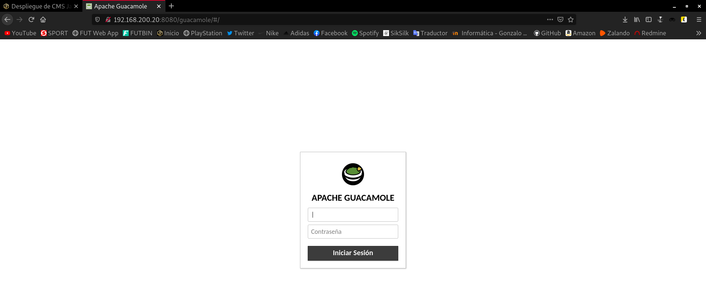

En esta práctica vamos a desplegar un CMS escrito en Java. Puedes escoger la aplicación que vas a desplegar de CMS escritos en Java o de Aplicaciones Java en Bitnami.
Aplicación escogida y su funcionalidad
He decidido escoger el CMS escrito en Java, llamado Guacamole.
Apache Guacamole es una herramienta libre que nos permite conectarnos remotamente a un servidor mediante el navegador web sin necesidad de usar un cliente.
Gracias a HTML5, una vez tengamos instalado y configurado Apache Guacamole, tan solo tenemos que conectarnos mediante el navegador web para empezar a trabajar remotamente.
Guía de los pasos fundamentales para realizar la instalación
-
Instalar tomcat 9.
-
Comprobar el acceso al puerto 8080.
-
Buscar un archivo
.wary almacenarlo en la ruta/var/lib/tomcat9/webapps. -
Acceder a la aplicación.
-
Realizar un proxy inverso en Apache2 y realizar la configuración necesaria.
A continuación vamos a realizar la instalación de tomcat 9 y de la aplicación en sí.
Antes de nada, necesitaremos un equipo donde trabajar. Yo voy a instalar una máquina virtual, y para ello, voy a utilizar Vagrant. He creado este Vagrantfile:
# -*- mode: ruby -*-
# vi: set ft=ruby :
Vagrant.configure("2") do |config|
config.vm.box = "debian/buster64"
config.vm.network "private_network", ip: "192.168.200.20"
end
Una vez estamos en nuestro equipo de trabajo, en primer lugar, debemos instalar Tomcat, en mi caso, voy a instalar la versión 9.
Tomcat requiere que Java esté instalado para poder ejecutar cualquier código de aplicación web Java.
apt install default-jdk -y
Instalado Java, ya podemos proceder a instalar Tomcat. Para ello:
apt install tomcat9 -y
Para comprobar el funcionamiento de una forma más visual, podemos conectarnos desde un navegador web mediante la dirección IP de la máquina especificando el puerto 8080:

Vemos que está funcionando correctamente.
En este punto, ya podemos descargar el fichero .war.
¿Alguien se pregunta qué es un fichero .war?
Un fichero .war es una aplicación web que permite a Tomcat acceder a su utilización. El fichero .war tiene que ser descomprimido para ser leído.
Nos descargamos el fichero .war de la página oficial de Apache Guacamole. En mi caso, descargo la última versión, que en este momento es la 1.2.0. La he descargado desde mi máquina y la he pasado mediante scp a la máquina virtual Vagrant, aquí podemos ver que ya lo tenemos:
root@buster:~# ls guacamole-1.2.0.war
Una vez la hemos descargado, tenemos que mover el archivo .war al directorio /var/lib/tomcat9/webapps, y podremos apreciar como automáticamente, al almacenar el fichero en esta ruta, se descomprime generando una carpeta llamada guacamole-1.2.0 que es la que contiene la aplicación:
root@buster:~# mv guacamole-1.2.0.war /var/lib/tomcat9/webapps root@buster:~# ls /var/lib/tomcat9/webapps/ guacamole-1.2.0 guacamole-1.2.0.war ROOT root@buster:~# ls /var/lib/tomcat9/webapps/guacamole-1.2.0 app guacamole-common-js guacamole.min.css index.html META-INF WEB-INF fonts guacamole.css guacamole.min.js layouts relocateParameters.js generated guacamole.js images license.txt translations
Antes de probar a acceder desde el navegador, en mi caso, prefiero cambiarle el nombre a este nuevo directorio, para así no tener que escribir también la versión en cada acceso a la web:
root@buster:/var/lib/tomcat9/webapps# mv guacamole-1.2.0 guacamole root@buster:/var/lib/tomcat9/webapps# ls guacamole guacamole-1.2.0.war ROOT
Me he dado cuenta, que al cambiarle el nombre, el fichero .war vuelve a generar otra vez la carpeta guacamole-1.2.0. Parece ser que al cambiarle el nombre, este fichero detecta que la carpeta no está creada y la vuelve a originar de manera automática. Para solucionar esto, he eliminado el fichero .war y el nuevo directorio, de manera que ahora solo poseo el directorio guacamole.
Hecho esto, vamos a probar a acceder a la dirección 192.168.200.20:8080/guacamole:

Vemos que podemos acceder a la aplicación.
Hecho esto, vamos a llevar a cabo el último paso, que sería el de configurar nuestro servidor web Apache para que nos sirva nuestro CMS Guacamole, para lo que debemos realizar un proxy inverso.
Procedemos a instalar nuestro servidor web, para ello utilizamos el siguiente comando:
apt install apache2 apache2-utils -y
Ahora, necesitamos instalar el paquete que contiene los módulos fundamentales para conectar Apache con tomcat9:
apt install libapache2-mod-jk -y
Habilitamos los siguiente módulos:
a2enmod proxy proxy_http
Instalado y habilitado, vamos a crear un nuevo virtualhost. He copiado el fichero 000-default.conf para que me sirva de plantilla para el virtualhost que verdaderamente voy a configurar, que es el llamado guacamole.conf:
root@buster:/etc/apache2/sites-available# cp 000-default.conf guacamole.conf root@buster:/etc/apache2/sites-available# nano guacamole.conf
Editamos el nuevo virtualhost y queda con este aspecto:
<\VirtualHost *:80\>
ServerName www.guacamole-javierpzh.com
ServerAdmin webmaster@localhost
DocumentRoot /srv/www/guacamole
ErrorLog ${APACHE_LOG_DIR}/error.log
CustomLog ${APACHE_LOG_DIR}/access.log combined
<\Location /guacamole/\>
Order allow,deny
Allow from all
ProxyPass http://localhost:8080/guacamole/ flushpackets=on
ProxyPassReverse http://localhost:8080/guacamole/
<\/Location\>
<\/VirtualHost\>
Atención: a esta configuración hay que eliminarle los carácteres \, que he tenido que introducir para escapar los carácteres siguientes, así que en caso de querer copiar la configuración, debemos tener en cuenta esto.
El último bloque, hace referencia y sirve para configurar el proxy inverso.
También podemos ver, como he especificado que el contenido de esta web, estará en /srv/www/guacamole, pues bien, para que Apache sea capaz de buscar en dicho directorio, debemos dirigirnos al fichero /etc/apache2/apache2.conf, y descomentar o añadir el siguiente bloque, ya que por defecto, solo nos proporciona el contenido almacenado en /var/:
<\Directory /srv/\>
Options Indexes FollowSymLinks
AllowOverride None
Require all granted
<\/Directory\>
Atención: a esta configuración hay que eliminarle los carácteres \, que he tenido que introducir para escapar los carácteres siguientes, así que en caso de querer copiar la configuración, debemos tener en cuenta esto.
En este punto, solo nos quedaría crear un fichero index.html en la ruta /srv/www/guacamole. En mi caso el contenido de este fichero es el siguiente:
<\h1\>Si quieres ir a Guacamole,haz click <\a href=http://www.guacamole-javierpzh.com/guacamole/#/\> aqui<\/a\><\/h1\>
Atención: a estas líneas hay que eliminarle los carácteres \, que he tenido que introducir para escapar los carácteres siguientes, así que en caso de querer copiarlas, debemos tener en cuenta esto.
Por último, vamos a reiniciar nuestro servidor web:
systemctl restart apache2
Nos dirigimos a nuestro navegador e introducimos la dirección www.guacamole-javierpzh.com:
Hacemos click para dirigirnos al enlace:
Ya estaríamos viendo nuestra aplicación servida por nuestro servidor web Apache, por lo que habríamos terminado con el post.